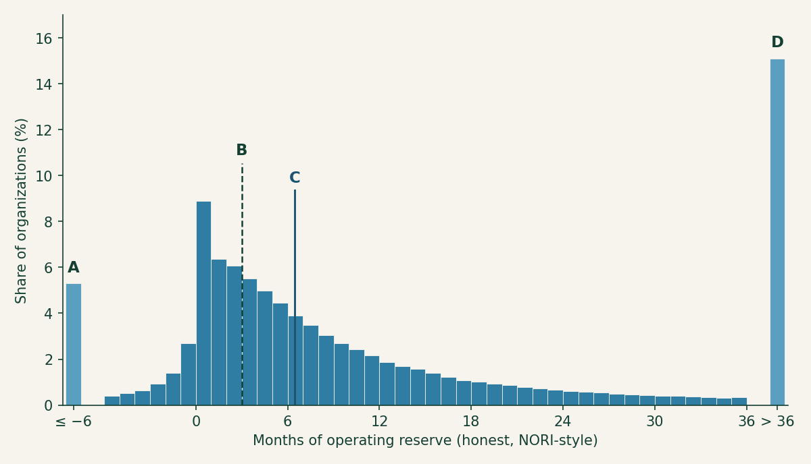
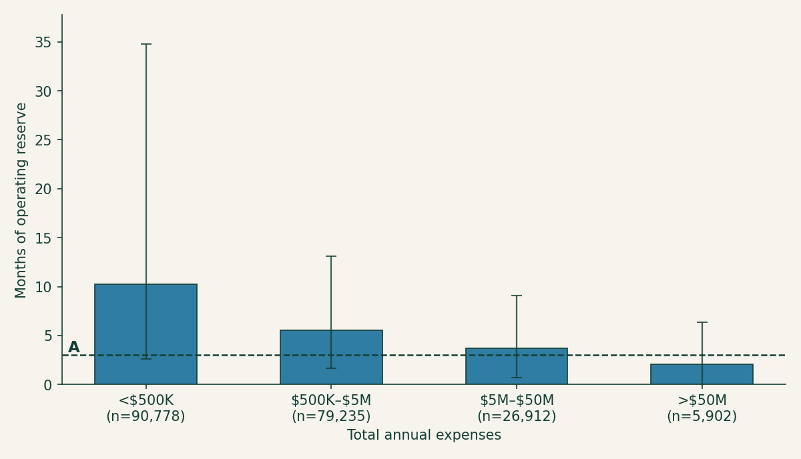

Months of cash, at scale: the runway of 202,827 charities, computed
The last post in this series ended with a dare disguised as a conclusion: the runway number nobody prints is sitting in public data, four arithmetic operations away, for every tax-exempt organization in America. A dare like that should be taken. So this post takes it — the same four lines of the Form 990, the same three corrections, run not on one charity but on every Form 990 filed electronically in a calendar year: 345,365 filings from the IRS’s own public extract, 202,827 of them from 501(c)(3) charities. Not a survey, not a sample — the census. And the census disagrees with the surveys in one direction that should worry donors and in another that will surprise them.
The census, not the survey
Everything the sector knows about its own reserves, it knows mostly from surveys — the Nonprofit Finance Fund’s 2,200 respondents, BDO’s 250. But the IRS publishes an annual extract of tax-exempt financial data — every line item this series has ever pointed at, for every full Form 990 received in a year, as one downloadable file. The mapping post and the extraction post in this series built the plumbing for exactly this moment (Figure 1). The extract used here covers returns filed in calendar year 2024 — mostly fiscal 2023 books.
Figure 1. The same gauge as last time, read 202,827 times: the reserve arithmetic scales from one charity to the whole sector because the IRS publishes every filing’s balance sheet as data.
Two cleanup steps matter enough to describe, because anyone who reruns this will hit both. First, organizations that file more than once in the window (amended returns, late filings) appear more than once; keeping only the latest tax period per EIN trims the file from 345,365 rows to 324,416 organizations. Second — and this one is a trap — the honest formula starts from net assets without donor restrictions, Part X line 27. But organizations that don’t follow FASB accounting report their equity on lines 30–32 instead and leave line 27 blank, which the naive script reads as “zero unrestricted net assets” and scores as a charity with no reserve at all. Nearly 77,000 filings fail that reconciliation (lines 27–29 don’t sum to line 33) and have to be set aside. What survives is 244,592 organizations with positive cash expenses and a balance sheet the formula can trust, 202,827 of them 501(c)(3) public charities. Every number below refers to those charities, computed with the honest recipe from last time: line 27, minus fixed assets (line 10c), plus the mortgages that finance them (line 23), divided by monthly cash expenses (line 25 minus depreciation, over twelve). The whole calculation is Code 1; the full script lives in the blog repository.
cash_expenses = totfuncexpns - deprcatndepletn # Pt IX 25 - 22
expendable = (unrstrctnetasstsend # Pt X 27
- lndbldgsequipend # Pt X 10c
+ secrdmrtgsend) # Pt X 23
months = expendable / (cash_expenses / 12.0)Code 1. The honest reserve, in the IRS extract’s own field names — the four arithmetic operations the last post promised, ready to run on 202,827 rows at once.
What the whole sector looks like
The median 501(c)(3) holds 6.5 months of honest operating reserve. That’s the comfortable-sounding headline, and it lasts exactly as long as it takes to look at the rest of the distribution (Figure 2). A third of charities — 33 percent — sit at or below the three-month floor that the NORI workgroup treats as the minimum prudent reserve. One in five is at or below a single month. And 14 percent are at or below zero: their buildings and equipment exceed their entire unrestricted equity, so in expendable terms they are underwater — operating, meeting payroll, delivering programs, with less than nothing in the tank.

Figure 2. The runway of every 501(c)(3) that filed a full Form 990 in calendar 2024, in one-month bins. A and D are detached overflow bins collecting everything beyond the axis: A holds the 5 percent of charities more than six months underwater, D the 15 percent with more than three years. B marks the NORI three-month floor — a third of the sector sits at or below it — and C the median of 6.5 months. The mass piled just above zero is the sector’s hand-to-mouth majority.
The other end of the distribution is just as instructive: 20 percent of charities hold more than two years of reserve, and 15 percent more than three. The last post’s advice cuts both ways — near zero, ask whether you’re funding a program or a rescue; past a couple of years, ask whether that’s a policy-backed quasi-endowment or money idling while the mission waits. Both extremes are common enough that a donor will meet them regularly, which is Table 1’s point: the thresholds worth checking, honest versus naive.
| Share of 501(c)(3)s at or below… | Honest | Naive |
|---|---|---|
| 0 months | 14% | 8% |
| 1 month | 21% | 12% |
| 3 months | 33% | 20% |
| 6 months | 48% | 32% |
| 12 months | 66% | 49% |
| — and above 24 months | 20% | 34% |
Table 1. The distribution at the thresholds that matter, computed both ways. The naive number (total net assets over total expenses) tells a story roughly twice as comfortable as the honest one at every line.
Table 1 is also the census’s verdict on the naive shortcut. The naive median is 12.5 months — nearly double the honest 6.5 — and by the naive reckoning only a fifth of the sector is under the three-month floor instead of a third. For the typical single organization the corrections move the answer by a modest 1.6 months; the medians diverge so much more because the corrections bite hardest exactly where the naive number looks best, the balance sheets padded with buildings and restricted endowments. The flattery is not uniform — it is targeted at the organizations a donor most needs to see clearly.
The census versus the surveys
NFF’s 2025 survey found 52 percent of respondents with three months or less cash on hand. The census, computing literal cash on hand the same way (Part X lines 1 and 2 against monthly cash expenses), finds 36 percent at or below three months. Both are right; they’re counting different populations. The full Form 990 is only required of organizations above roughly $200K in gross receipts — the smallest charities file the postcard 990-N or the short 990-EZ and aren’t in this census at all — while NFF’s respondents skew toward exactly those small community organizations. The survey oversamples the sector’s thin end; the census can’t see it. Read together: 36 percent is the floor for the sector’s true hand-to-mouth share, and the real number, with the sub-$200K majority counted, is plausibly right where NFF puts it.
The other survey is the one the census overturns. BDO’s benchmarking found 62 percent of its nonprofits holding more than seven months, and the last post read NFF and BDO together as a barbell — thin little orgs, cushioned big ones. The census says otherwise (Figure 3). Expendable reserve falls with size, monotonically: charities under $500K in expenses hold a median 10.2 months, the $500K–$5M band holds 5.5, the $5M–$50M band 3.7, and the giants above $50M — the hospitals and universities — hold a median of 2.0 months, with 58 percent under the three-month floor.

Figure 3. The barbell, inverted: median honest reserve by expense band (whiskers span the 25th–75th percentiles). A marks the NORI three-month floor; the share of each band at or below it rises monotonically left to right — 27, 35, 45, and 58 percent. The smallest filers hold the most runway; the largest organizations run the thinnest.
Part of the inversion is mechanical, and worth being honest about. Large institutions finance buildings with tax-exempt bonds (Part X line 20), which the NORI recipe doesn’t add back the way it adds back mortgages; crediting the bond debt lifts the giants’ median from 2.0 to 3.1 months — thicker, still thinnest of any band. The rest is real: a hospital’s endowment is mostly donor-restricted and its balance sheet is mostly plant, so its expendable cushion is genuinely slim relative to an enormous monthly burn, even when its total net assets are vast. And the smallest band carries a survivorship asterisk — a sub-$500K org that clears the full-990 filing bar and keeps filing is already a survivor, and nearly half of them (46 percent) hold more than a year of runway. The lesson isn’t that big nonprofits are about to fail — they have credit lines and reliable revenue the small ones don’t. It’s that no sector average, and no survey of somebody else’s population, tells you anything about your charity. The distribution is too wide and too structured for the average to mean much.
Compute it before you give — the machines already did
This entire post is one script against one public file — the same four fields per filing as last time, times 202,827. That was the point of the dare: the sector’s most important resilience number isn’t hidden, it’s merely unprinted, and once the 990 data is mapped and extracted, computing it for every charity in America costs seconds. The search tools at noprofits.org put these same balance-sheet figures side by side for the charity you’re actually vetting, and the ProPublica Nonprofit Explorer will show you the underlying filing. A third of the sector at or below three months; one in seven below zero; the biggest institutions running the leanest. Somewhere in those piles is the charity you’re about to fund — and now you know the number to check before you do.
This is a plain-language overview, not tax, legal, or financial advice. Figures are computed from the IRS SOI annual extract of Form 990 data (returns filed in calendar year 2024, mostly fiscal 2023), as-filed and unaudited; organizations filing the 990-EZ or 990-N are not included, filings whose net-asset lines do not reconcile are excluded, and the analysis script (calcs/months-of-cash-at-scale/ in this site’s repository) contains the full method. Survey figures are as published by NFF (2025) and BDO (2024) and describe different populations.